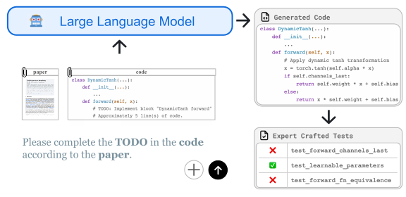

ResearchCodeBench collects recently released research papers and their corresponding code repository to construct a benchmark for evaluating code LLMs on research code generation.
Introduction
ResearchCodeBench is a rigorous benchmark for evaluating LLMs on their ability to translate novel machine learning research papers into executable code. It is built from 212 real-world coding challenges sourced directly from top ML papers published in 2024–2025 and continues to grow through ongoing community contributions. We evaluate over 30 proprietary and open-source models and find that even the best-performing LLMs solve fewer than 40% of the challenges. In addition to performance scores, ResearchCodeBench presents novel empirical findings not captured by prior benchmarks.
Contamination
Help Us Grow ResearchCodeBench!
We’re looking for recent ML papers with available code to add to our benchmark. Paper2Code-bench is continuously evolving, and we welcome contributions from the research community to expand our collection of papers and implementation challenges.
Help us identify the core contributions within the code that test LLMs’ ability to implement novel ideas. Your expertise will help shape the future of AI evaluation benchmarks.
What We Need:
- Paper Link (arXiv, conference page, etc.)
- Official GitHub Repository Link
- Your thoughts on the key code sections/lines to focus on
How to Submit:
You can submit your contribution through our online form. Or scan the QR code blow:
Contributors Get Credited!
All contributors will be acknowledged in our publications and on the official Paper2Code-bench website.
Why Your Contribution Matters
By contributing to Paper2Code-bench, you’re helping advance the development of AI systems that can understand and implement novel research ideas. This benchmark serves as a critical evaluation tool for measuring progress toward more capable AI research assistants.
Join us in building the future of AI research tools!
List of papers
-
Diffusion Model Alignment Using Direct Preference Optimization
Paper | Code -
Your ViT is Secretly an Image Segmentation Model
Paper | Code -
GPS: A Probabilistic Distributional Similarity with Gumbel Priors for Set-to-Set Matching
Paper | Code -
On Conformal Isometry of Grid Cells: Learning Distance-Preserving Position Embedding
Paper | Code -
Second-Order Min-Max Optimization with Lazy Hessians
Paper | Code -
Mapping the increasing use of LLMs in scientific papers
Paper | Code -
Min-p Sampling for Creative and Coherent LLM Outputs
Paper | Code -
REPA-E: Unlocking VAE for End-to-End Tuning with Latent Diffusion Transformers
Paper | Code -
Principal Components Enable A New Language of Images
Paper | Code -
TabDiff: a Mixed-type Diffusion Model for Tabular Data Generation
Paper | Code -
Robust Weight Initialization for Tanh Neural Networks with Fixed Point Analysis
Paper | Code